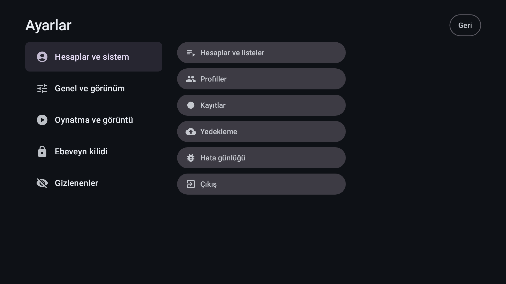

Kumandayla rahat IPTV.IPTV that feels right on a remote.
Televizyon için tasarlanmış hızlı ve sade bir oynatıcı; aynı uygulama telefonda ve tablette dokunmayla çalışır. Kendi Xtream Codes hesabınızı ya da M3U listenizi ekleyin; kanallar, rehber, filmler ve diziler tek yerde. Reklam yok, izleme yok. A fast, clean player built for the big screen; the same app works by touch on phones and tablets. Add your own Xtream Codes account or M3U playlist and get channels, guide, movies and series in one place. No ads, no tracking.


Kanepeden hiç kalkmadanEverything from the couch
Her ekran kumandanın yön tuşları ve OK için düşünüldü; fare gerekmez. Telefonda ve tablette aynı ekranlar dokunmayla çalışır.Every screen is designed around the arrow keys and OK; no mouse needed. On phones and tablets the same screens work by touch.
Kesintisiz önizlemeSeamless preview
Seçili kanal küçük pencerede oynar; OK ile tam ekrana siyah ekran ve yeniden yükleme olmadan geçer.The focused channel plays in a small window; OK takes it full screen with no black screen or reload.
TV rehberi ve arşivTV guide and catch-up
Tüm kategoriler tek rehberde; geçmiş programları arşivden izleyin, gelecektekilere hatırlatıcı kurun.All categories in one guide; watch past shows from catch-up and set reminders for upcoming ones.
Kayıt ve dizi kaydıRecording and series recording
Yayını ya da programı kaydedin; dizi kaydı yeni bölümleri rehber güncellendikçe kendiliğinden planlar.Record a stream or a show; series recording schedules new episodes as the guide updates.
Duraklat ve geri sarPause and rewind live TV
Canlı yayını durdurun, 10 saniyelik adımlarla geri sarın; arşivi olan kanalda programı baştan başlatın.Pause live TV and skip back in 10-second steps; restart the current show on channels with catch-up.
Profiller ve çocuk profiliProfiles and a kids profile
Herkesin kendi favorileri ve kaldığı yerler. Çocuk profili yalnızca seçtiğiniz kategorileri görür; PIN kilidi var.Everyone gets their own favorites and resume points. The kids profile only sees the categories you pick; PIN lock included.
Çoklu ekranMulti-view
Dört kanala kadar aynı anda; sesi istediğiniz pencereye sabitleyin.Up to four channels at once; pin the sound to the window you want.
Telefondan yedek aktarımıBackups from your phone
Parolalı (AES-256) yedek; ev ağındaki telefondan TV'ye gönderin ya da indirin. Dosya seçicisi olmayan Fire TV'de de çalışır.Password-protected (AES-256) backups; send them to the TV from a phone on your home network, or download them. Works on Fire TV, which has no file picker.
Kendini güncelleyen uygulamaUpdates itself
Yeni sürümü kendisi bulur; indirdiği dosyanın bütünlüğünü ve imzasını doğruladıktan sonra kurar.Finds new versions on its own and checks the download's integrity and signature before installing.


Ayrıntılar da düşünüldüThe details are covered too
- Türkçe uyumlu arama: "cocuk" yazın, "ÇOCUK" bulunsun. Kanal, film, dizi ve programlarda.Accent-aware search: finds channels, movies, series and shows however you type them.
- Geniş ses desteği: AC3, E-AC3, DTS ve MP2; cihaz çözemezse yazılım çözücü devreye girer.Wide audio support: AC3, E-AC3, DTS and MP2, with a software decoder when the device can't.
- Kare hızı eşleme: TV'nin yenileme hızı yayına göre ayarlanır (50 Hz, 24 Hz).Frame-rate matching: the TV's refresh rate follows the stream (50 Hz, 24 Hz).
- Büyük listeler: on binlerce kanal ve film, düşük bellekle.Big playlists: tens of thousands of channels and movies, with low memory use.
- Kopan yayına yeniden bağlanma: ağ geri gelince kendiliğinden; görüntü takılırsa oynatıcı kendini toparlar.Reconnects dropped streams on its own as soon as the network is back, and recovers when the picture freezes.
- Başka cihazla çekişmez: aynı hesapta başka bir cihaz izlerken sağlayıcı yayını kapatırsa birkaç denemeden sonra durur ve nedenini söyler.No tug of war: if your provider keeps closing the stream because another device is watching on the same account, it stops after a few tries and tells you why.
- Uzun süre açık kalabilir: canlı yayın arabelleğinin bir üst sınırı var; saatlerce izlemede de cihazın belleği dolmaz.Made to stay on: the live buffer has a hard limit, so hours of watching don't fill up the device's memory.
- Türkçe ve İngilizce arayüz; yazı boyutu dört kademe.Turkish and English interface; four text sizes.
Telefonda ve tablette deOn phones and tablets too
Ayrı bir uygulama yok: aynı APK, Android 6 ve üzeri telefon ve tabletlerde dokunmayla çalışır.No separate app: the same APK works by touch on phones and tablets running Android 6 or later.
- Dokun: seç ve izle. Basılı tut: favori, sıra, gizle, kilitle.Tap to pick and watch. Hold for favorite, order, hide and lock.
- Dar ekranda tek sütun: önce kategoriler, dokununca kanallar; "‹ kategori" ya da Geri ile dönülür.One column on narrow screens: categories first, then channels; "‹ category" or Back returns.
- Oynatıcıda kaydırın: yukarı/aşağı kanal değiştirir, sola/sağa sarar ya da panelleri açar; çift dokunuş menüyü açar.Swipe in the player: up/down changes channel, left/right seeks or opens the panels; a double tap opens the menu.
- Dikey ve yatay tutuşta; tablette TV'deki gibi iki sütun.Portrait and landscape; tablets get the two-column TV layout.


KurulumInstalling
Uygulama mağazada değil; APK olarak kurulur. Bir kez kurduktan sonra güncellemeler uygulamanın içinden gelir.The app isn't in a store; it's installed as an APK. After the first install, updates come from inside the app.
Downloader'ı yükleyinGet Downloader
Fire TV'de arama ile "Downloader" uygulamasını bulun ve yükleyin.On your Fire TV, search for the "Downloader" app and install it.
Kuruluma izin verinAllow installs
Ayarlar → My Fire TV → Geliştirici seçenekleri → Bilinmeyen uygulamaları yükle → Downloader: Açık. Geliştirici seçenekleri görünmüyorsa My Fire TV → Hakkında'da cihaz adına 7 kez basın.Settings → My Fire TV → Developer options → Install unknown apps → Downloader: On. If Developer options is missing, press the device name 7 times under My Fire TV → About.
Adresi yazınEnter the address
Downloader'da şu adresi yazın, indirme bitince "Yükle"yi seçin:Type this address in Downloader, then choose "Install" when the download finishes: @SITE@/ELM-IPTV-@VERSION@.apk
Android TV ve Google TV: aynı yol geçerli; Downloader ya da bir dosya yöneticisiyle APK'yı açın ve kurulum iznini verin.Android TV and Google TV: the same steps; open the APK with Downloader or a file manager and allow the install.
Telefon ve tablet: bu sayfayı telefonda açıp "APK'yı indir"e dokunun, indirilen dosyayı açın ve tarayıcınızın uygulama yüklemesine izin verin.Phones and tablets: open this page on the phone, tap "Download APK", open the downloaded file and allow your browser to install apps.
Sık sorulanlarQuestions
Kanal ya da içerik veriyor mu?Does it come with channels?
Hayır. ELM IPTV yalnızca bir oynatıcıdır; içerik sağlamaz ve satmaz. Kendi IPTV sağlayıcınızın Xtream Codes bilgilerini ya da M3U bağlantısını kullanırsınız.No. ELM IPTV is only a player; it doesn't provide or sell any content. You use the Xtream Codes details or M3U link from your own IPTV provider.
Ücretli mi?Does it cost anything?
Hayır. Ücretsiz; reklam ya da uygulama içi satın alma yok.No. It's free, with no ads and no in-app purchases.
Hangi cihazlarda çalışır?Which devices does it run on?
Fire OS 6, 7 ve 8 kullanan Fire TV cihazlarında (Fire OS 6 ve 8'de gerçek cihazda denendi), Android 6 ve üzeri Android TV ve Google TV cihazlarında, Android telefon ve tabletlerde. Vega OS kullanan yeni Fire TV'lerde (Fire TV Stick 4K Select ve sonrası) çalışmaz; bu cihazlara dışarıdan uygulama kurulamıyor. Cihazınızın hangisini kullandığını Ayarlar → My Fire TV → Hakkında'da görebilirsiniz.Fire TV devices with Fire OS 6, 7 and 8 (tested on real Fire OS 6 and 8 devices), Android TV and Google TV devices running Android 6 or later, and Android phones and tablets. It doesn't run on newer Fire TVs with Vega OS (Fire TV Stick 4K Select and later), which don't allow installing apps from outside the store. Settings → My Fire TV → About shows which one yours runs.
Aynı hesabı birden çok cihazda kullanabilir miyim?Can I use the same account on several devices?
Bu, sağlayıcınızın izin verdiği bağlantı sayısına bağlı. Sınır doluysa sağlayıcı yayını kapatır; ELM IPTV birkaç denemeden sonra durur, diğer cihazı düşürmeye çalışmaz ve ekranda nedenini söyler. Kanalı yeniden seçmek bir kez daha dener.That depends on how many connections your provider allows. When the limit is reached the provider closes the stream; ELM IPTV stops after a few tries instead of pushing the other device off, and says why on screen. Choosing the channel again tries once more.
Bilgisayarda çalışır mı?Does it run on a computer?
Evet: Windows 10/11 ve 64 bit Linux sürümleri GitHub sürüm sayfasında (.msi ve .AppImage). Bilgisayarda VLC 3 kurulu olmalı.Yes: Windows 10/11 and 64-bit Linux versions are on the GitHub releases page (.msi and .AppImage). VLC 3 must be installed on the computer.
Hesap bilgilerim nereye gidiyor?Where do my account details go?
Yalnızca cihazınızda saklanır ve yalnızca sağlayıcınızın sunucusuna gönderilir. Uygulamada reklam, analitik ya da kullanım takibi yok; hata kayıtları cihazda kalır.They're stored only on your device and sent only to your provider's server. The app has no ads, analytics or usage tracking; error logs stay on the device.
Güncellemeleri nasıl alırım?How do I get updates?
Uygulama günde bir kez yeni sürüm olup olmadığına bakar ve sorar. Ayarlar → Hesaplar ve sistem → Güncelleme'den elle de denetleyebilirsiniz.The app checks once a day and asks you. You can also check by hand under Settings → Accounts and system → Update.